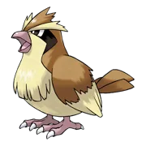

Find all 20 Wild Zones on the original city map. Tap a numbered pin, choose a district or search an item or Pokémon to see its opening mission, Alpha targets and the location clues actually preserved in the guide.
Choose a numbered zone on the city overview to see an enlarged crop of the same map image and its recorded pickup descriptions. The enlarged view helps you orient yourself; it is not a separately photographed rooftop route or an exact item-pin map.
07Wild Zone centre
◉Mapped item (key only)
SScaffold search area
LLadder lead
HHolovator lead
GGlide return
RRoof target; entrance unverified
✣Colorful Screw search area
The PDF describes S/L/H/G/R/✣ as approximate search leads. It does not provide the full individual coordinates required to draw all those markers accurately here. The list below preserves any original climb or landmark text instead of placing guessed pins.
The Lumiose City overview
Tap a numbered Wild Zone marker or use the directory. On a narrow phone, swipe the map horizontally to reach edge markers; the list below is an alternative with larger tap targets.
In-game city overview from the owner’s saved guide; zone marker placement is approximate, not precise pickup positioning. Image credits.
ZOOMED MAP REGION
Choose a Wild Zone to zoom
This magnifies the existing city image around the selected zone. It is not a new high-resolution close-up and does not reveal unrecorded ladders, scaffolds or item coordinates.
Wild Zone directory
20 of 20 Wild Zones listed
No matching zone found; try another species, item or district.
Selected Wild Zone & access notes
Tap a zone on the overview, or select it in the directory. This area contains the source-recorded item and screw search clues, without inventing rooftop directions.
Choose a numbered pin or Wild Zone row to open the zone details below.
WILD ZONE 01 · Vert
Wild Zone 1
Unlock: Main Mission 3 · Sample wild Pokémon: Pidgey.

Wild Zone 01 · South Boulevard / Pokémon Research Lab
Detailed area close-upTap or click to view full size ↗
Catchable Pokémon · including Alpha encounters
Bunnelby
Fletchling
Mareep
Pichu
Pidgey
Scatterbug
Weedle
This location roster includes ordinary and fixed Alpha species; not all species appear simultaneously. Time of day, terrain, story access and spawn conditions can affect availability.
Fixed Alpha encounters
PidgeyLv. 24–26
Listed Alpha locations and times are preserved from the existing Alpha fieldbook; other eligible wild spawns may become Alpha after the zone survey.
Original photos show the owner’s captured game session, not the reader’s saved progress or permanent distortion locations. They are orientation references, not exact pickup pins. Full Alpha fieldbook ↗
This list repeats the owner's saved item inventory without changing its existing checkmarks. Many original entries name only the zone, not a precise position.
Poke Ball × 10From Taunie/Urbain
Poke Ball × 10From Taunie/Urbain
Potion × 5From trainer in Wild Zone
Poke Ball × 1On floor by bench
Lumiose GaletteFrom vendor in Wild Zone
ReviveUnder rocks
Poke BallExact pickup point not preserved (original note: “Listed in this Wild Zone; check the exact map pin”).
ReviveExact pickup point not preserved (original note: “Listed in this Wild Zone; check the exact map pin”).
ReviveExact pickup point not preserved (original note: “Listed in this Wild Zone; check the exact map pin”).
PotionExact pickup point not preserved (original note: “Listed in this Wild Zone; check the exact map pin”).
TM103Exact pickup point not preserved (original note: “Listed in this Wild Zone; check the exact map pin”).
Detailed area close-upTap or click to view full size ↗
Catchable Pokémon · including Alpha encounters
Binacle
Budew
Kakuna
Magikarp
Patrat
Staryu
This location roster includes ordinary and fixed Alpha species; not all species appear simultaneously. Time of day, terrain, story access and spawn conditions can affect availability.
Fixed Alpha encounters
MagikarpLv. 30–32 · Day
StaryuLv. 30–32 · Night
Listed Alpha locations and times are preserved from the existing Alpha fieldbook; other eligible wild spawns may become Alpha after the zone survey.
Original photos show the owner’s captured game session, not the reader’s saved progress or permanent distortion locations. They are orientation references, not exact pickup pins. Full Alpha fieldbook ↗
These are text search clues from the existing 100-screw checklist, not verified map-pin coordinates.
Show all 6 saved pickup listings
This list repeats the owner's saved item inventory without changing its existing checkmarks. Many original entries name only the zone, not a precise position.
TM027By tree next to lake
Heal BallExact pickup point not preserved (original note: “Listed in this Wild Zone; check the exact map pin”).
Full HealExact pickup point not preserved (original note: “Listed in this Wild Zone; check the exact map pin”).
PotionExact pickup point not preserved (original note: “Listed in this Wild Zone; check the exact map pin”).
Exp. Candy SExact pickup point not preserved (original note: “Listed in this Wild Zone; check the exact map pin”).
Great BallExact pickup point not preserved (original note: “Listed in this Wild Zone; check the exact map pin”).
Detailed area close-upTap or click to view full size ↗
Catchable Pokémon · including Alpha encounters
Espurr
Flabébé
Fletchling
Litleo
Pancham
Pikachu
Skiddo
This location roster includes ordinary and fixed Alpha species; not all species appear simultaneously. Time of day, terrain, story access and spawn conditions can affect availability.
Fixed Alpha encounters
FletchlingLv. 30–31
LitleoLv. 23–24
Listed Alpha locations and times are preserved from the existing Alpha fieldbook; other eligible wild spawns may become Alpha after the zone survey.
Original photos show the owner’s captured game session, not the reader’s saved progress or permanent distortion locations. They are orientation references, not exact pickup pins. Full Alpha fieldbook ↗
These are text search clues from the existing 100-screw checklist, not verified map-pin coordinates.
Show all 8 saved pickup listings
This list repeats the owner's saved item inventory without changing its existing checkmarks. Many original entries name only the zone, not a precise position.
Nest BallExact pickup point not preserved (original note: “Listed in this Wild Zone; check the exact map pin”).
Paralyze HealExact pickup point not preserved (original note: “Listed in this Wild Zone; check the exact map pin”).
AntidoteExact pickup point not preserved (original note: “Listed in this Wild Zone; check the exact map pin”).
ReviveExact pickup point not preserved (original note: “Listed in this Wild Zone; check the exact map pin”).
Great BallExact pickup point not preserved (original note: “Listed in this Wild Zone; check the exact map pin”).
PearlExact pickup point not preserved (original note: “Listed in this Wild Zone; check the exact map pin”).
Super PotionExact pickup point not preserved (original note: “Listed in this Wild Zone; check the exact map pin”).
Unlock: Main Mission 5 · Sample wild Pokémon: Spinarak.
Wild Zone 04 · Dormez Bien Cemetery
Rouge district · original owner map photographs
Area overview & Pokémon encounter cardTap or click to view full size ↗Detailed area close-upTap or click to view full size ↗
Catchable Pokémon · including Alpha encounters
Ekans
Gastly
Honedge
Patrat
Spewpa
Spinarak
This location roster includes ordinary and fixed Alpha species; not all species appear simultaneously. Time of day, terrain, story access and spawn conditions can affect availability.
Fixed Alpha encounters
SpinarakLv. 20–21
Listed Alpha locations and times are preserved from the existing Alpha fieldbook; other eligible wild spawns may become Alpha after the zone survey.
Original photos show the owner’s captured game session, not the reader’s saved progress or permanent distortion locations. They are orientation references, not exact pickup pins. Full Alpha fieldbook ↗
These are text search clues from the existing 100-screw checklist, not verified map-pin coordinates.
Show all 11 saved pickup listings
This list repeats the owner's saved item inventory without changing its existing checkmarks. Many original entries name only the zone, not a precise position.
Cherished RingDefeat Sableye during Request
Full HealExact pickup point not preserved (original note: “Listed in this Wild Zone; check the exact map pin”).
TM072Behind Building
Dusk BallExact pickup point not preserved (original note: “Listed in this Wild Zone; check the exact map pin”).
Heal BallExact pickup point not preserved (original note: “Listed in this Wild Zone; check the exact map pin”).
PearlExact pickup point not preserved (original note: “Listed in this Wild Zone; check the exact map pin”).
AntidoteExact pickup point not preserved (original note: “Listed in this Wild Zone; check the exact map pin”).
ReviveExact pickup point not preserved (original note: “Listed in this Wild Zone; check the exact map pin”).
Great BallExact pickup point not preserved (original note: “Listed in this Wild Zone; check the exact map pin”).
Net BallExact pickup point not preserved (original note: “Listed in this Wild Zone; check the exact map pin”).
Super PotionExact pickup point not preserved (original note: “Listed in this Wild Zone; check the exact map pin”).
Detailed area close-upTap or click to view full size ↗
Catchable Pokémon · including Alpha encounters
Abra
Bellsprout
Binacle
Bunnelby
Electrike
Fletchinder
Fletchling
Patrat
Pidgeotto
Pidgey
Venipede
Whirlipede
This location roster includes ordinary and fixed Alpha species; not all species appear simultaneously. Time of day, terrain, story access and spawn conditions can affect availability.
Fixed Alpha encounters
BellsproutLv. 24–25
WhirlipedeLv. 27–28
Listed Alpha locations and times are preserved from the existing Alpha fieldbook; other eligible wild spawns may become Alpha after the zone survey.
Original photos show the owner’s captured game session, not the reader’s saved progress or permanent distortion locations. They are orientation references, not exact pickup pins. Full Alpha fieldbook ↗
Revitalizing TwigIn north east area, up some stars
Paralyze HealIn Bleu Sector 1 area
AntidoteIn Bleu Sector 1 area
ReviveIn Bleu Sector 1 area
ReviveIn Bleu Sector 1 area
CarbosIn Bleu Sector 1 area
AntidoteIn Bleu Sector 1 area
TM040In Bleu Sector 1 area
ZincIn Bleu Sector 1 area
Great BallIn Bleu Sector 1 area
Exp. Candy MIn Bleu Sector 1 area
Timer BallIn Bleu Sector 1 area
Max ReviveIn Bleu Sector 1 area
Paralyze HealIn Bleu Sector 1 area
Timer BallIn tunnel under the road
Luxury BallIn tunnel under the road
ReviveIn Bleu Sector 2 area
Great BallIn Bleu Sector 2 area
Leaf StoneIn Bleu Sector 2 area
Great BallIn Bleu Sector 2 area
ReviveIn Bleu Sector 2 area
Full HealIn Bleu Sector 2 area
Full HealIn Bleu Sector 2 area
PearlIn Bleu Sector 2 area
Timer BallIn Bleu Sector 2 area
Super PotionIn Bleu Sector 2 area
Show all 26 saved pickup listings
This list repeats the owner's saved item inventory without changing its existing checkmarks. Many original entries name only the zone, not a precise position.
Revitalizing TwigIn north east area, up some stars
Paralyze HealIn Bleu Sector 1 area
AntidoteIn Bleu Sector 1 area
ReviveIn Bleu Sector 1 area
ReviveIn Bleu Sector 1 area
CarbosIn Bleu Sector 1 area
AntidoteIn Bleu Sector 1 area
TM040In Bleu Sector 1 area Access guide (written-source cross-check; exact pin unverified): Bullet Seed: Take the northwestern stairs down to the canal passage. Clear the purple sludge with Water Gun or Confusion, then climb the ladder and look on the southern rooftop in Bleu Sector 1.
Area overview & Pokémon encounter cardTap or click to view full size ↗Detailed area close-upTap or click to view full size ↗
Catchable Pokémon · including Alpha encounters
Binacle
Buneary
Flaaffy
Houndoom
Houndour
Magikarp
Meditite
Pikachu
Swablu
This location roster includes ordinary and fixed Alpha species; not all species appear simultaneously. Time of day, terrain, story access and spawn conditions can affect availability.
Fixed Alpha encounters
PikachuLv. 40–42
HoundoomLv. 32–33
BinacleLv. 32–34
Listed Alpha locations and times are preserved from the existing Alpha fieldbook; other eligible wild spawns may become Alpha after the zone survey.
Original photos show the owner’s captured game session, not the reader’s saved progress or permanent distortion locations. They are orientation references, not exact pickup pins. Full Alpha fieldbook ↗
This list repeats the owner's saved item inventory without changing its existing checkmarks. Many original entries name only the zone, not a precise position.
Luxury BallExact pickup point not preserved (original note: “Listed in this Wild Zone; check the exact map pin”).
NuggetExact pickup point not preserved (original note: “Listed in this Wild Zone; check the exact map pin”).
Great BallExact pickup point not preserved (original note: “Listed in this Wild Zone; check the exact map pin”).
Paralyze HealExact pickup point not preserved (original note: “Listed in this Wild Zone; check the exact map pin”).
Super PotionExact pickup point not preserved (original note: “Listed in this Wild Zone; check the exact map pin”).
PearlExact pickup point not preserved (original note: “Listed in this Wild Zone; check the exact map pin”).
TM041Exact pickup point not preserved (original note: “Listed in this Wild Zone; check the exact map pin”).
Detailed area close-upTap or click to view full size ↗
Catchable Pokémon · including Alpha encounters
Audino
Fletchinder
Floette
Gastly
Hippopotas
Kakuna
Roselia
Shuppet
Vanillite
This location roster includes ordinary and fixed Alpha species; not all species appear simultaneously. Time of day, terrain, story access and spawn conditions can affect availability.
Fixed Alpha encounters
FletchinderLv. 32–33
Listed Alpha locations and times are preserved from the existing Alpha fieldbook; other eligible wild spawns may become Alpha after the zone survey.
Original photos show the owner’s captured game session, not the reader’s saved progress or permanent distortion locations. They are orientation references, not exact pickup pins. Full Alpha fieldbook ↗
No precise item-access landmark was recorded for this zone in the saved snapshot. Use the full item list below and check the game's height and terrain.
Nearby Colorful Screw search clues
✣ Screw 87Courtyard W of Wild Zone 7
These are text search clues from the existing 100-screw checklist, not verified map-pin coordinates.
Show all 5 saved pickup listings
This list repeats the owner's saved item inventory without changing its existing checkmarks. Many original entries name only the zone, not a precise position.
Net BallExact pickup point not preserved (original note: “Listed in this Wild Zone; check the exact map pin”).
Dive BallExact pickup point not preserved (original note: “Listed in this Wild Zone; check the exact map pin”).
Exp. Candy MExact pickup point not preserved (original note: “Listed in this Wild Zone; check the exact map pin”).
Great BallExact pickup point not preserved (original note: “Listed in this Wild Zone; check the exact map pin”).
TM092Exact pickup point not preserved (original note: “Listed in this Wild Zone; check the exact map pin”).
Detailed area close-upTap or click to view full size ↗
Catchable Pokémon · including Alpha encounters
Camerupt
Drilbur
Gible
Krokorok
Machop
Numel
Sandile
This location roster includes ordinary and fixed Alpha species; not all species appear simultaneously. Time of day, terrain, story access and spawn conditions can affect availability.
Fixed Alpha encounters
CameruptLv. 39–40
KrokorokLv. 37–38
Listed Alpha locations and times are preserved from the existing Alpha fieldbook; other eligible wild spawns may become Alpha after the zone survey.
Original photos show the owner’s captured game session, not the reader’s saved progress or permanent distortion locations. They are orientation references, not exact pickup pins. Full Alpha fieldbook ↗
No precise item-access landmark was recorded for this zone in the saved snapshot. Use the full item list below and check the game's height and terrain.
Nearby Colorful Screw search clues
✣ Screw 80Small enclosed space N of Wild Zone 8
✣ Screw 84Jaune Sector 3 roof, on Wild Zone 8 side
These are text search clues from the existing 100-screw checklist, not verified map-pin coordinates.
Show all 4 saved pickup listings
This list repeats the owner's saved item inventory without changing its existing checkmarks. Many original entries name only the zone, not a precise position.
Great BallExact pickup point not preserved (original note: “Listed in this Wild Zone; check the exact map pin”).
Hyper PotionExact pickup point not preserved (original note: “Listed in this Wild Zone; check the exact map pin”).
Heal BallExact pickup point not preserved (original note: “Listed in this Wild Zone; check the exact map pin”).
TM036Exact pickup point not preserved (original note: “Listed in this Wild Zone; check the exact map pin”).
Area overview & Pokémon encounter cardTap or click to view full size ↗Detailed area close-upTap or click to view full size ↗
Catchable Pokémon · including Alpha encounters
Carbink
Espurr
Fletchinder
Kadabra
Manectric
Mawile
Meowstic
Sableye
This location roster includes ordinary and fixed Alpha species; not all species appear simultaneously. Time of day, terrain, story access and spawn conditions can affect availability.
Fixed Alpha encounters
MeowsticLv. 41–42 · Night
MeowsticLv. 41–42 · Day
ManectricLv. 40–41
Listed Alpha locations and times are preserved from the existing Alpha fieldbook; other eligible wild spawns may become Alpha after the zone survey.
Original photos show the owner’s captured game session, not the reader’s saved progress or permanent distortion locations. They are orientation references, not exact pickup pins. Full Alpha fieldbook ↗
No precise item-access landmark was recorded for this zone in the saved snapshot. Use the full item list below and check the game's height and terrain.
Nearby Colorful Screw search clues
✣ Screw 91Wild Zone 9 scaffold
These are text search clues from the existing 100-screw checklist, not verified map-pin coordinates.
Show all 24 saved pickup listings
This list repeats the owner's saved item inventory without changing its existing checkmarks. Many original entries name only the zone, not a precise position.
Nest BallExact pickup point not preserved (original note: “Listed in this Wild Zone; check the exact map pin”).
NuggetExact pickup point not preserved (original note: “Listed in this Wild Zone; check the exact map pin”).
Big PearlExact pickup point not preserved (original note: “Listed in this Wild Zone; check the exact map pin”).
Big PearlExact pickup point not preserved (original note: “Listed in this Wild Zone; check the exact map pin”).
Full HealExact pickup point not preserved (original note: “Listed in this Wild Zone; check the exact map pin”).
Timer BallExact pickup point not preserved (original note: “Listed in this Wild Zone; check the exact map pin”).
CalciumExact pickup point not preserved (original note: “Listed in this Wild Zone; check the exact map pin”).
Rare CandyExact pickup point not preserved (original note: “Listed in this Wild Zone; check the exact map pin”).
Great BallExact pickup point not preserved (original note: “Listed in this Wild Zone; check the exact map pin”).
Net BallExact pickup point not preserved (original note: “Listed in this Wild Zone; check the exact map pin”).
Rare CandyExact pickup point not preserved (original note: “Listed in this Wild Zone; check the exact map pin”).
Dusk BallExact pickup point not preserved (original note: “Listed in this Wild Zone; check the exact map pin”).
Full HealExact pickup point not preserved (original note: “Listed in this Wild Zone; check the exact map pin”).
Great BallExact pickup point not preserved (original note: “Listed in this Wild Zone; check the exact map pin”).
ZincExact pickup point not preserved (original note: “Listed in this Wild Zone; check the exact map pin”).
ReviveExact pickup point not preserved (original note: “Listed in this Wild Zone; check the exact map pin”).
Hyper PotionExact pickup point not preserved (original note: “Listed in this Wild Zone; check the exact map pin”).
TM018Exact pickup point not preserved (original note: “Listed in this Wild Zone; check the exact map pin”).
ProteinExact pickup point not preserved (original note: “Listed in this Wild Zone; check the exact map pin”).
Nest BallExact pickup point not preserved (original note: “Listed in this Wild Zone; check the exact map pin”).
Big PearlExact pickup point not preserved (original note: “Listed in this Wild Zone; check the exact map pin”).
PearlExact pickup point not preserved (original note: “Listed in this Wild Zone; check the exact map pin”).
Colorful ScrewExact pickup point not preserved (original note: “Listed in this Wild Zone; check the exact map pin”).
Paralyze HealExact pickup point not preserved (original note: “Listed in this Wild Zone; check the exact map pin”).
Detailed area close-upTap or click to view full size ↗
Catchable Pokémon · including Alpha encounters
Arbok
Bellsprout
Carvanha
Sharpedo
Slowpoke
Staryu
Tynamo
Watchog
This location roster includes ordinary and fixed Alpha species; not all species appear simultaneously. Time of day, terrain, story access and spawn conditions can affect availability.
Fixed Alpha encounters
SharpedoLv. 41–43
WatchogLv. 41–43
ArbokLv. 50–52
Listed Alpha locations and times are preserved from the existing Alpha fieldbook; other eligible wild spawns may become Alpha after the zone survey.
Original photos show the owner’s captured game session, not the reader’s saved progress or permanent distortion locations. They are orientation references, not exact pickup pins. Full Alpha fieldbook ↗
No precise item-access landmark was recorded for this zone in the saved snapshot. Use the full item list below and check the game's height and terrain.
Nearby Colorful Screw search clues
✣ Screw 65scaffold W of Wild Zone 10
These are text search clues from the existing 100-screw checklist, not verified map-pin coordinates.
Show all 12 saved pickup listings
This list repeats the owner's saved item inventory without changing its existing checkmarks. Many original entries name only the zone, not a precise position.
Ultra BallExact pickup point not preserved (original note: “Listed in this Wild Zone; check the exact map pin”).
Quick BallExact pickup point not preserved (original note: “Listed in this Wild Zone; check the exact map pin”).
Great BallExact pickup point not preserved (original note: “Listed in this Wild Zone; check the exact map pin”).
ReviveExact pickup point not preserved (original note: “Listed in this Wild Zone; check the exact map pin”).
Hyper PotionExact pickup point not preserved (original note: “Listed in this Wild Zone; check the exact map pin”).
Timer BallExact pickup point not preserved (original note: “Listed in this Wild Zone; check the exact map pin”).
Hyper PotionExact pickup point not preserved (original note: “Listed in this Wild Zone; check the exact map pin”).
TM034Exact pickup point not preserved (original note: “Listed in this Wild Zone; check the exact map pin”). Access guide (written-source cross-check; exact pin unverified): Night Slash: Take the ladder on the southeastern side and head west across the rooftops. Clear the purple sludge with Water Gun or Confusion, then collect the TM.
Dive BallExact pickup point not preserved (original note: “Listed in this Wild Zone; check the exact map pin”).
NuggetExact pickup point not preserved (original note: “Listed in this Wild Zone; check the exact map pin”).
Big PearlExact pickup point not preserved (original note: “Listed in this Wild Zone; check the exact map pin”).
Ultra BallExact pickup point not preserved (original note: “Listed in this Wild Zone; check the exact map pin”).
Area overview & Pokémon encounter cardTap or click to view full size ↗Detailed area close-upTap or click to view full size ↗
Catchable Pokémon · including Alpha encounters
Clauncher
Clawitzer
Furfrou
Gyarados
Inkay
Slowbro
Slowpoke
Stunfisk
This location roster includes ordinary and fixed Alpha species; not all species appear simultaneously. Time of day, terrain, story access and spawn conditions can affect availability.
Fixed Alpha encounters
SlowbroLv. 42–44
ClawitzerLv. 42–44
Listed Alpha locations and times are preserved from the existing Alpha fieldbook; other eligible wild spawns may become Alpha after the zone survey.
Original photos show the owner’s captured game session, not the reader’s saved progress or permanent distortion locations. They are orientation references, not exact pickup pins. Full Alpha fieldbook ↗
Exp. Candy M × 1Alongside rock and cliff in the east
Dive Ball × 1Alongside tree in north east
Big Pearl × 1Alongside stairs in north west
Net Ball × 1Alongside lamp in the south
Ultra Ball × 1On hill by south west exit
Nugget × 1Alongside river in south west
Exp. Candy MIn the northern area
Dive BallIn the northern area
TM063In the northern area
Max PotionIn the northern area
Seed of Mastery Z-ABehind hut along the south wall
Nearby Colorful Screw search clues
✣ Screw 69roof near NW corner of Wild Zone 11
These are text search clues from the existing 100-screw checklist, not verified map-pin coordinates.
Show all 12 saved pickup listings
This list repeats the owner's saved item inventory without changing its existing checkmarks. Many original entries name only the zone, not a precise position.
Exp. Candy M × 1Alongside rock and cliff in the east
Dive Ball × 1Alongside tree in north east
Big Pearl × 1Alongside stairs in north west
Net Ball × 1Alongside lamp in the south
Ultra Ball × 1On hill by south west exit
Nugget × 1Alongside river in south west
Timer BallExact pickup point not preserved (original note: “Listed in this Wild Zone; check the exact map pin”).
Exp. Candy MIn the northern area
Dive BallIn the northern area
TM063In the northern area
Max PotionIn the northern area
Seed of Mastery Z-ABehind hut along the south wall
Area overview & Pokémon encounter cardTap or click to view full size ↗Detailed area close-upTap or click to view full size ↗
Catchable Pokémon · including Alpha encounters
Abomasnow
Avalugg
Bergmite
Delibird
Gogoat
Machoke
Machop
Snorunt
Snover
Vanillite
This location roster includes ordinary and fixed Alpha species; not all species appear simultaneously. Time of day, terrain, story access and spawn conditions can affect availability.
Fixed Alpha encounters
AbomasnowLv. 43–45
AvaluggLv. 54–56
Listed Alpha locations and times are preserved from the existing Alpha fieldbook; other eligible wild spawns may become Alpha after the zone survey.
Original photos show the owner’s captured game session, not the reader’s saved progress or permanent distortion locations. They are orientation references, not exact pickup pins. Full Alpha fieldbook ↗
No precise item-access landmark was recorded for this zone in the saved snapshot. Use the full item list below and check the game's height and terrain.
Nearby Colorful Screw search clues
✣ Screw 54roof at W side of Wild Zone 12
These are text search clues from the existing 100-screw checklist, not verified map-pin coordinates.
Show all 11 saved pickup listings
This list repeats the owner's saved item inventory without changing its existing checkmarks. Many original entries name only the zone, not a precise position.
Dive BallExact pickup point not preserved (original note: “Listed in this Wild Zone; check the exact map pin”).
Dusk BallExact pickup point not preserved (original note: “Listed in this Wild Zone; check the exact map pin”).
Super PotionExact pickup point not preserved (original note: “Listed in this Wild Zone; check the exact map pin”).
ReviveExact pickup point not preserved (original note: “Listed in this Wild Zone; check the exact map pin”).
Paralyze HealExact pickup point not preserved (original note: “Listed in this Wild Zone; check the exact map pin”).
Repeat BallExact pickup point not preserved (original note: “Listed in this Wild Zone; check the exact map pin”).
Ice StoneExact pickup point not preserved (original note: “Listed in this Wild Zone; check the exact map pin”).
Quick BallExact pickup point not preserved (original note: “Listed in this Wild Zone; check the exact map pin”).
Nest BallExact pickup point not preserved (original note: “Listed in this Wild Zone; check the exact map pin”).
Ultra BallExact pickup point not preserved (original note: “Listed in this Wild Zone; check the exact map pin”).
TM013Exact pickup point not preserved (original note: “Listed in this Wild Zone; check the exact map pin”).
Area overview & Pokémon encounter cardTap or click to view full size ↗Detailed area close-upTap or click to view full size ↗
Catchable Pokémon · including Alpha encounters
Heracross
Phantump
Pinsir
Scyther
Trevenant
Vivillon
Weepinbell
This location roster includes ordinary and fixed Alpha species; not all species appear simultaneously. Time of day, terrain, story access and spawn conditions can affect availability.
Fixed Alpha encounters
TrevenantLv. 47–48 · Night
WeepinbellLv. 46–47 · Day
Listed Alpha locations and times are preserved from the existing Alpha fieldbook; other eligible wild spawns may become Alpha after the zone survey.
Original photos show the owner’s captured game session, not the reader’s saved progress or permanent distortion locations. They are orientation references, not exact pickup pins. Full Alpha fieldbook ↗
No precise item-access landmark was recorded for this zone in the saved snapshot. Use the full item list below and check the game's height and terrain.
Nearby Colorful Screw search clues
✣ Screw 32scaffold W of Wild Zone 13, at the top
✣ Screw 33scaffold W of Wild Zone 13, lower down
✣ Screw 34roofs along the S side of Wild Zone 13
These are text search clues from the existing 100-screw checklist, not verified map-pin coordinates.
Show all 8 saved pickup listings
This list repeats the owner's saved item inventory without changing its existing checkmarks. Many original entries name only the zone, not a precise position.
Exp. Candy MExact pickup point not preserved (original note: “Listed in this Wild Zone; check the exact map pin”).
Big PearlExact pickup point not preserved (original note: “Listed in this Wild Zone; check the exact map pin”).
Great BallExact pickup point not preserved (original note: “Listed in this Wild Zone; check the exact map pin”).
TM081Exact pickup point not preserved (original note: “Listed in this Wild Zone; check the exact map pin”).
Hyper PotionExact pickup point not preserved (original note: “Listed in this Wild Zone; check the exact map pin”).
Ultra BallExact pickup point not preserved (original note: “Listed in this Wild Zone; check the exact map pin”).
Dive BallExact pickup point not preserved (original note: “Listed in this Wild Zone; check the exact map pin”).
Luxury BallExact pickup point not preserved (original note: “Listed in this Wild Zone; check the exact map pin”).
Unlock: Main Mission 20 · Sample wild Pokémon: Excadrill.
Wild Zone 14 · Electrical Substation / Saison Canal
Magenta district · original owner map photographs
Area overview & Pokémon encounter cardTap or click to view full size ↗Detailed area close-upTap or click to view full size ↗
Catchable Pokémon · including Alpha encounters
Aron
Drilbur
Emolga
Excadrill
Helioptile
Lairon
Onix
This location roster includes ordinary and fixed Alpha species; not all species appear simultaneously. Time of day, terrain, story access and spawn conditions can affect availability.
Fixed Alpha encounters
ExcadrillLv. 48–49
Listed Alpha locations and times are preserved from the existing Alpha fieldbook; other eligible wild spawns may become Alpha after the zone survey.
Original photos show the owner’s captured game session, not the reader’s saved progress or permanent distortion locations. They are orientation references, not exact pickup pins. Full Alpha fieldbook ↗
These are text search clues from the existing 100-screw checklist, not verified map-pin coordinates.
Show all 8 saved pickup listings
This list repeats the owner's saved item inventory without changing its existing checkmarks. Many original entries name only the zone, not a precise position.
Seed of Mastery Z-ABehind building in east
NuggetExact pickup point not preserved (original note: “Listed in this Wild Zone; check the exact map pin”).
Luxury BallExact pickup point not preserved (original note: “Listed in this Wild Zone; check the exact map pin”).
Max ReviveExact pickup point not preserved (original note: “Listed in this Wild Zone; check the exact map pin”).
Ultra BallExact pickup point not preserved (original note: “Listed in this Wild Zone; check the exact map pin”).
Full HealExact pickup point not preserved (original note: “Listed in this Wild Zone; check the exact map pin”).
TM039Behind rocks in southern corner
CalciumExact pickup point not preserved (original note: “Listed in this Wild Zone; check the exact map pin”).
Area overview & Pokémon encounter cardTap or click to view full size ↗Detailed area close-upTap or click to view full size ↗
Catchable Pokémon · including Alpha encounters
Banette
Beedrill
Gourgeist
Haunter
Larvitar
Noibat
Pumpkaboo
Scolipede
Shuppet
Trevenant
Whirlipede
This location roster includes ordinary and fixed Alpha species; not all species appear simultaneously. Time of day, terrain, story access and spawn conditions can affect availability.
Fixed Alpha encounters
BeedrillLv. 51–52 · Day
GourgeistLv. 52–53
BanetteLv. 52–53 · Night
Listed Alpha locations and times are preserved from the existing Alpha fieldbook; other eligible wild spawns may become Alpha after the zone survey.
Original photos show the owner’s captured game session, not the reader’s saved progress or permanent distortion locations. They are orientation references, not exact pickup pins. Full Alpha fieldbook ↗
No precise item-access landmark was recorded for this zone in the saved snapshot. Use the full item list below and check the game's height and terrain.
Nearby Colorful Screw search clues
✣ Screw 77roof near S entrance of Wild Zone 15
These are text search clues from the existing 100-screw checklist, not verified map-pin coordinates.
Show all 7 saved pickup listings
This list repeats the owner's saved item inventory without changing its existing checkmarks. Many original entries name only the zone, not a precise position.
Ultra BallExact pickup point not preserved (original note: “Listed in this Wild Zone; check the exact map pin”).
NuggetExact pickup point not preserved (original note: “Listed in this Wild Zone; check the exact map pin”).
Super PotionExact pickup point not preserved (original note: “Listed in this Wild Zone; check the exact map pin”).
Timer BallExact pickup point not preserved (original note: “Listed in this Wild Zone; check the exact map pin”).
TM052Exact pickup point not preserved (original note: “Listed in this Wild Zone; check the exact map pin”).
Burn HealExact pickup point not preserved (original note: “Listed in this Wild Zone; check the exact map pin”).
Dusk BallExact pickup point not preserved (original note: “Listed in this Wild Zone; check the exact map pin”).
Detailed area close-upTap or click to view full size ↗
Catchable Pokémon · including Alpha encounters
Ampharos
Barbaracle
Falinks
Flaaffy
Florges
Froakie
Medicham
Starmie
This location roster includes ordinary and fixed Alpha species; not all species appear simultaneously. Time of day, terrain, story access and spawn conditions can affect availability.
Fixed Alpha encounters
AmpharosLv. 52–53
Listed Alpha locations and times are preserved from the existing Alpha fieldbook; other eligible wild spawns may become Alpha after the zone survey.
Original photos show the owner’s captured game session, not the reader’s saved progress or permanent distortion locations. They are orientation references, not exact pickup pins. Full Alpha fieldbook ↗
These are text search clues from the existing 100-screw checklist, not verified map-pin coordinates.
Show all 9 saved pickup listings
This list repeats the owner's saved item inventory without changing its existing checkmarks. Many original entries name only the zone, not a precise position.
Moon StoneOn floor after Starmie On High request
TM076Exact pickup point not preserved (original note: “Listed in this Wild Zone; check the exact map pin”).
Luxury BallExact pickup point not preserved (original note: “Listed in this Wild Zone; check the exact map pin”).
Dusk BallExact pickup point not preserved (original note: “Listed in this Wild Zone; check the exact map pin”).
Quick BallExact pickup point not preserved (original note: “Listed in this Wild Zone; check the exact map pin”).
Rare CandyExact pickup point not preserved (original note: “Listed in this Wild Zone; check the exact map pin”).
Heal BallExact pickup point not preserved (original note: “Listed in this Wild Zone; check the exact map pin”).
Big PearlExact pickup point not preserved (original note: “Listed in this Wild Zone; check the exact map pin”).
Ultra BallExact pickup point not preserved (original note: “Listed in this Wild Zone; check the exact map pin”).
Detailed area close-upTap or click to view full size ↗
Catchable Pokémon · including Alpha encounters
Chespin
Diggersby
Klefki
Lampent
Mawile
Pyroar
Skarmory
This location roster includes ordinary and fixed Alpha species; not all species appear simultaneously. Time of day, terrain, story access and spawn conditions can affect availability.
Fixed Alpha encounters
PyroarLv. 56–57
PyroarLv. 56–57
MawileLv. 56–57
Listed Alpha locations and times are preserved from the existing Alpha fieldbook; other eligible wild spawns may become Alpha after the zone survey.
Original photos show the owner’s captured game session, not the reader’s saved progress or permanent distortion locations. They are orientation references, not exact pickup pins. Full Alpha fieldbook ↗
No precise item-access landmark was recorded for this zone in the saved snapshot. Use the full item list below and check the game's height and terrain.
Nearby Colorful Screw search clues
✣ Screw 17roof near E side of Wild Zone 17
These are text search clues from the existing 100-screw checklist, not verified map-pin coordinates.
Show all 7 saved pickup listings
This list repeats the owner's saved item inventory without changing its existing checkmarks. Many original entries name only the zone, not a precise position.
Ultra BallExact pickup point not preserved (original note: “Listed in this Wild Zone; check the exact map pin”).
Dusk BallExact pickup point not preserved (original note: “Listed in this Wild Zone; check the exact map pin”).
Rare CandyExact pickup point not preserved (original note: “Listed in this Wild Zone; check the exact map pin”).
Max ReviveExact pickup point not preserved (original note: “Listed in this Wild Zone; check the exact map pin”).
Big NuggetExact pickup point not preserved (original note: “Listed in this Wild Zone; check the exact map pin”).
PotionExact pickup point not preserved (original note: “Listed in this Wild Zone; check the exact map pin”).
TM062Exact pickup point not preserved (original note: “Listed in this Wild Zone; check the exact map pin”).
Area overview & Pokémon encounter cardTap or click to view full size ↗Detailed area close-upTap or click to view full size ↗
Catchable Pokémon · including Alpha encounters
Altaria
Bagon
Fennekin
Lopunny
Noibat
Noivern
Salamence
Swablu
This location roster includes ordinary and fixed Alpha species; not all species appear simultaneously. Time of day, terrain, story access and spawn conditions can affect availability.
Fixed Alpha encounters
SalamenceLv. 61–62
LopunnyLv. 55–56
Listed Alpha locations and times are preserved from the existing Alpha fieldbook; other eligible wild spawns may become Alpha after the zone survey.
Original photos show the owner’s captured game session, not the reader’s saved progress or permanent distortion locations. They are orientation references, not exact pickup pins. Full Alpha fieldbook ↗
No precise item-access landmark was recorded for this zone in the saved snapshot. Use the full item list below and check the game's height and terrain.
Show all 10 saved pickup listings
This list repeats the owner's saved item inventory without changing its existing checkmarks. Many original entries name only the zone, not a precise position.
Burn HealExact pickup point not preserved (original note: “Listed in this Wild Zone; check the exact map pin”).
Timer BallExact pickup point not preserved (original note: “Listed in this Wild Zone; check the exact map pin”).
Big NuggetExact pickup point not preserved (original note: “Listed in this Wild Zone; check the exact map pin”).
Hyper PotionExact pickup point not preserved (original note: “Listed in this Wild Zone; check the exact map pin”).
Seed of Mastery Z-AExact pickup point not preserved (original note: “Listed in this Wild Zone; check the exact map pin”).
Quick BallExact pickup point not preserved (original note: “Listed in this Wild Zone; check the exact map pin”).
Rare CandyExact pickup point not preserved (original note: “Listed in this Wild Zone; check the exact map pin”).
TM065Exact pickup point not preserved (original note: “Listed in this Wild Zone; check the exact map pin”).
IronExact pickup point not preserved (original note: “Listed in this Wild Zone; check the exact map pin”).
CarbosExact pickup point not preserved (original note: “Listed in this Wild Zone; check the exact map pin”).
Detailed area close-upTap or click to view full size ↗
Catchable Pokémon · including Alpha encounters
Audino
Clefairy
Cleffa
Drampa
Eevee
Furfrou
Kangaskhan
This location roster includes ordinary and fixed Alpha species; not all species appear simultaneously. Time of day, terrain, story access and spawn conditions can affect availability.
Fixed Alpha encounters
ClefairyLv. 58–60 · Night
FurfrouLv. 58–61 · Day; not morning
Listed Alpha locations and times are preserved from the existing Alpha fieldbook; other eligible wild spawns may become Alpha after the zone survey.
Original photos show the owner’s captured game session, not the reader’s saved progress or permanent distortion locations. They are orientation references, not exact pickup pins. Full Alpha fieldbook ↗
No precise item-access landmark was recorded for this zone in the saved snapshot. Use the full item list below and check the game's height and terrain.
Nearby Colorful Screw search clues
✣ Screw 76scaffold E of Wild Zone 19
✣ Screw 79Jaune Sector 5 roof, near Wild Zone 19
These are text search clues from the existing 100-screw checklist, not verified map-pin coordinates.
Show all 9 saved pickup listings
This list repeats the owner's saved item inventory without changing its existing checkmarks. Many original entries name only the zone, not a precise position.
Full HealExact pickup point not preserved (original note: “Listed in this Wild Zone; check the exact map pin”).
Ultra BallExact pickup point not preserved (original note: “Listed in this Wild Zone; check the exact map pin”).
NuggetExact pickup point not preserved (original note: “Listed in this Wild Zone; check the exact map pin”).
Quick BallExact pickup point not preserved (original note: “Listed in this Wild Zone; check the exact map pin”).
Repeat BallExact pickup point not preserved (original note: “Listed in this Wild Zone; check the exact map pin”).
Luxury BallExact pickup point not preserved (original note: “Listed in this Wild Zone; check the exact map pin”).
Rare CandyExact pickup point not preserved (original note: “Listed in this Wild Zone; check the exact map pin”).
Super PotionExact pickup point not preserved (original note: “Listed in this Wild Zone; check the exact map pin”).
TM079Exact pickup point not preserved (original note: “Listed in this Wild Zone; check the exact map pin”).
Detailed area close-upTap or click to view full size ↗
15 ordinary catchable Pokémon
Aggron
Bulbasaur
Charmander
Chikorita
Dragalge
Garbodor
Gardevoir
Hippowdon
Lucario
Malamar
Roserade
Scrafty
Squirtle
Tepig
Totodile
Regular encounters are distinct from the randomized central Alpha pool.
67 possible rotating Alpha Pokémon
Two rotating Alpha encounters from the saved pool; individual species are not guaranteed on each visit (Lv. 63–65).
Raichu
Clefable
Alakazam
Machamp
Victreebel
Gengar
Kangaskhan
Starmie
Pinsir
Gyarados
Vaporeon
Jolteon
Flareon
Dragonite
Ariados
Heracross
Delibird
Skarmory
Tyranitar
Gardevoir
Sableye
Aggron
Medicham
Altaria
Absol
Metagross
Roserade
Garchomp
Lucario
Hippowdon
Leafeon
Glaceon
Gallade
Froslass
Simisage
Simisear
Simipour
Scolipede
Krookodile
Scrafty
Garbodor
Vanilluxe
Eelektross
Chandelure
Stunfisk
Diggersby
Talonflame
Vivillon
Florges
Gogoat
Pangoro
Furfrou
Aegislash
Malamar
Barbaracle
Dragalge
Heliolisk
Sylveon
Hawlucha
Dedenne
Carbink
Goodra
Klefki
Gourgeist
Noivern
Drampa
Falinks
Original photos show the owner’s captured game session, not the reader’s saved progress or permanent distortion locations. They are orientation references, not exact pickup pins. Full Alpha fieldbook ↗
These are text search clues from the existing 100-screw checklist, not verified map-pin coordinates.
Show all 66 saved pickup listings
This list repeats the owner's saved item inventory without changing its existing checkmarks. Many original entries name only the zone, not a precise position.
Zygarde CubeGiven by L after catching Zygarde
Tiny MushroomHidden - 20.09% Chance
Pretty FeatherHidden - 17.08% Chance
Cheri BerryHidden - 6.03% Chance
Chesto BerryHidden - 6.03% Chance
Pecha BerryHidden - 6.03% Chance
Rawst BerryHidden - 6.03% Chance
Aspear BerryHidden - 6.03% Chance
Oran BerryHidden - 6.03% Chance
Persim BerryHidden - 2.01% Chance
Lum BerryHidden - 2.01% Chance
Sitrus BerryHidden - 2.01% Chance
Kelpsy BerryHidden - 2.01% Chance
Qualot BerryHidden - 2.01% Chance
Hondew BerryHidden - 2.01% Chance
Grepa BerryHidden - 2.01% Chance
Tamato BerryHidden - 2.01% Chance
Pomeg BerryHidden - 0.5% Chance
Occa BerryHidden - 0.5% Chance
Passho BerryHidden - 0.5% Chance
Wacan BerryHidden - 0.5% Chance
Rindo BerryHidden - 0.5% Chance
Yache BerryHidden - 0.5% Chance
Chople BerryHidden - 0.5% Chance
Kebia BerryHidden - 0.5% Chance
Shuca BerryHidden - 0.5% Chance
Coba BerryHidden - 0.5% Chance
Payapa BerryHidden - 0.5% Chance
Tanga BerryHidden - 0.5% Chance
Charti BerryHidden - 0.5% Chance
Kasib BerryHidden - 0.5% Chance
Haban BerryHidden - 0.5% Chance
Colbur BerryHidden - 0.5% Chance
Babiri BerryHidden - 0.5% Chance
Chilan BerryHidden - 0.5% Chance
Roseli BerryHidden - 0.5% Chance
Lonely MintHidden - 0.05% Chance
Impish MintHidden - 0.05% Chance
Rash MintHidden - 0.05% Chance
Sassy MintHidden - 0.05% Chance
Serious MintHidden - 0.05% Chance
Adamant MintHidden - 0.05% Chance
Lax MintHidden - 0.05% Chance
Quiet MintHidden - 0.05% Chance
Timid MintHidden - 0.05% Chance
Naughty MintHidden - 0.05% Chance
Relaxed MintHidden - 0.05% Chance
Calm MintHidden - 0.05% Chance
Hasty MintHidden - 0.05% Chance
Brave MintHidden - 0.05% Chance
Modest MintHidden - 0.05% Chance
Gentle MintHidden - 0.05% Chance
Jolly MintHidden - 0.05% Chance
Bold MintHidden - 0.05% Chance
Mild MintHidden - 0.05% Chance
Careful MintHidden - 0.05% Chance
Naive MintHidden - 0.05% Chance
Seed of Mastery Z-AExact pickup point not preserved (original note: “Listed in this Wild Zone; check the exact map pin”).
Seed of Mastery Z-AExact pickup point not preserved (original note: “Listed in this Wild Zone; check the exact map pin”).
Bottle CapExact pickup point not preserved (original note: “Listed in this Wild Zone; check the exact map pin”).
Big NuggetExact pickup point not preserved (original note: “Listed in this Wild Zone; check the exact map pin”).
Rare CandyExact pickup point not preserved (original note: “Listed in this Wild Zone; check the exact map pin”).
Exp. Candy LExact pickup point not preserved (original note: “Listed in this Wild Zone; check the exact map pin”).
Poke BallExact pickup point not preserved (original note: “Listed in this Wild Zone; check the exact map pin”).
Max ReviveExact pickup point not preserved (original note: “Listed in this Wild Zone; check the exact map pin”).
TM054Exact pickup point not preserved (original note: “Listed in this Wild Zone; check the exact map pin”).
The original PDF refers to 48 numbered sector close-ups and nine recurring Mega Dimension map layouts. Their fully expanded images and coordinate leads are not contained in this four-page PDF or the saved main-page map section. Those two standalone map pages remain marked as incomplete rather than pretending their contents have been recovered.
Find the zone: check its unlocking Mission and tap its numbered location on the city overview. Fast travel near the area if you have registered a nearby point.
Start at ground level: check hints such as “under rocks”, “by tree”, “behind building” or “from trainer” before climbing.
Then survey rooftops: if a clue says roof or scaffold, check accessible ladders, scaffolds, Holovators or connected building routes. The S/L/H/G/R legend is a search system, not an exact route for each pickup.
Look for nearby screws: the descriptions copied from the existing 100-screw checklist give district-side clues when available, not precise pins.
Record your finds: open the main item checklist and select the same zone there. This standalone map does not create another progress record or overwrite existing checkmarks.